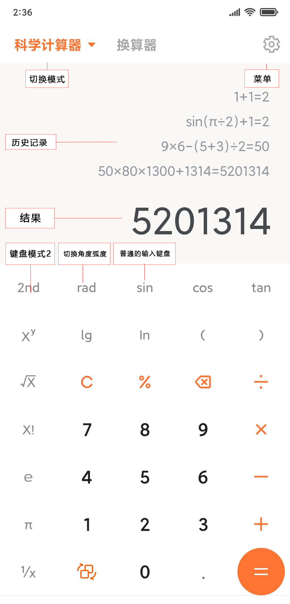
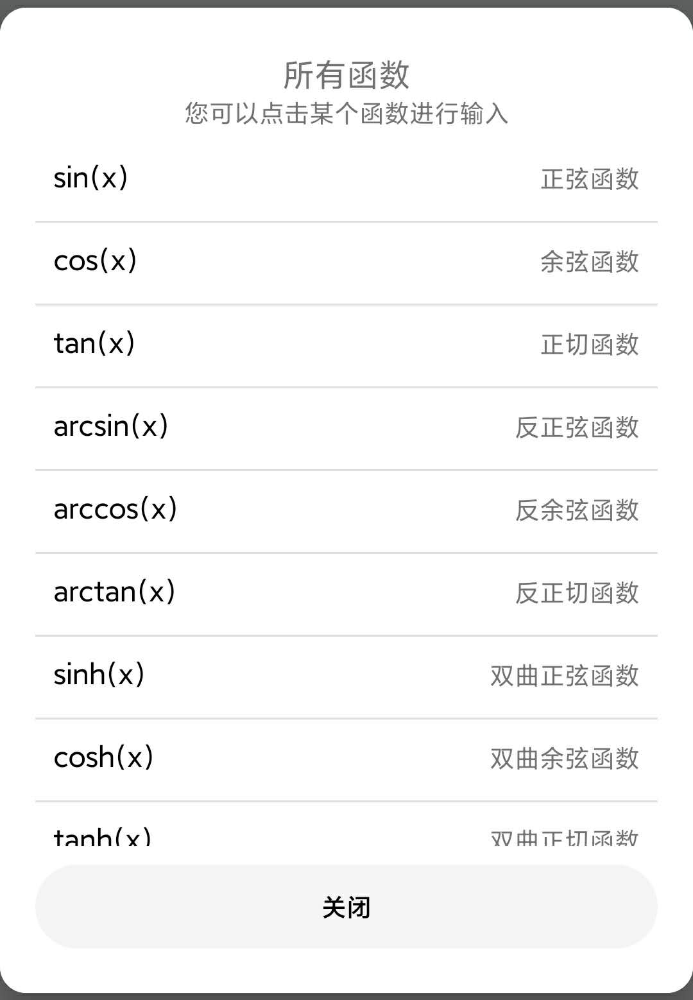
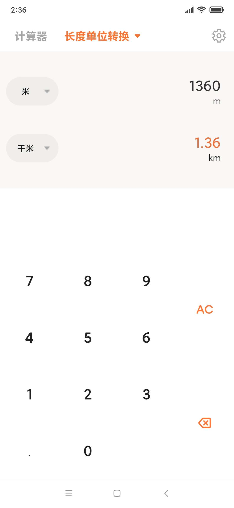

هذه آلة حاسبة أندرويد بسيطة للغاية، تم تصميمها لتكون أداة حسابية شاملة وسهلة الاستخدام.
تتميز الحاسبة بدعمها للعمليات الحسابية المتقدمة وتحليل الصيغ الرياضية المعقدة.
توفر هذه الحاسبة الميزات التالية:

تعمل الحاسبة بشكل مشابه للحاسبات التقليدية. توضح الصورة أعلاه مواقع أزرار الوظائف المختلفة.
تستخدم الحاسبة نظام Double للحسابات الرياضية العامة، بدقة تتراوح بين 10 إلى 15 منزلة عشرية.
بالنسبة للعمليات الأساسية (الجمع، الطرح، الضرب، القسمة)، يتم استخدام BigDecimal لضمان أعلى دقة ممكنة، ويمكنك ضبط الدقة من الإعدادات.
نطاق القيم المدعومة:
يمكنك النقر على زر "إدخال يدوي" لكتابة عملية حسابية كاملة. يرجى التأكد من صحة الصيغة واستخدام الأقواس بشكل صحيح.
أمثلة:
1+4*(6-2)+8/3
sin(2*pi)+cos(1)
تدعم الحاسبة مجموعة واسعة من الدوال. يمكنك عرضها من خلال "القائمة" > "كافة الدوال".

يمكنك الانتقال إلى وضع المبرمج من خلال "تغيير الوضع" > "مبرمج" لإجراء العمليات المنطقية والتحويل بين الأنظمة العددية (ثنائي، ثماني، ستة عشري).
يتيح وضع "المحول" تحويل القيم بين الوحدات المختلفة مثل الطول والوزن ودرجة الحرارة.

هذا التطبيق مخصص للاستخدام العام. يرجى عدم استخدامه في الحسابات الهندسية أو العلمية التي تتطلب دقة فائقة جداً دون التحقق من النتائج.
© 2026 جميع الحقوق محفوظة.